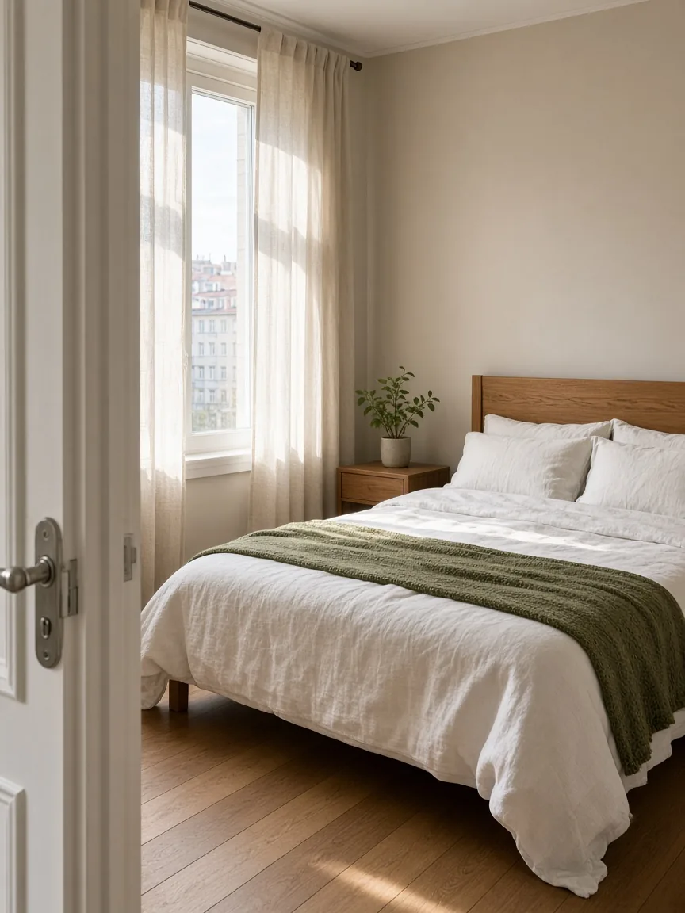
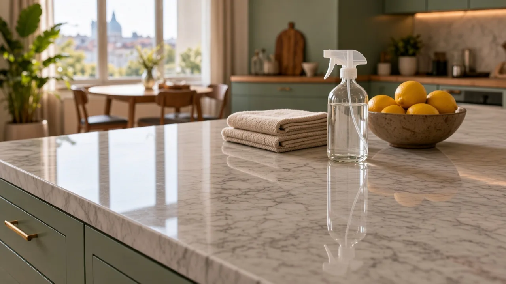
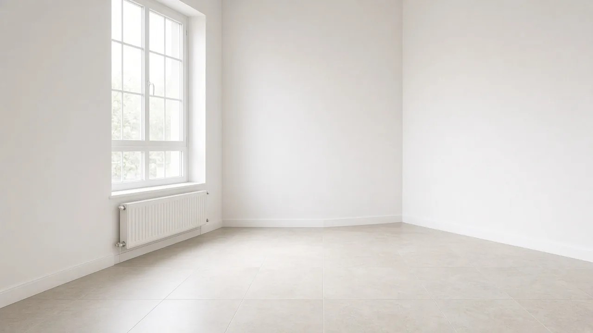

Čišćenje u Beogradu · Beograd
Čist dom. Više vremena za ono što volite.
Dom je mesto u kom želite da odahnete. Kada se obaveze nagomilaju, čišćenje lako postane još jedna stavka koja čeka slobodan vikend. Čišćenje u Beogradu pruža usluge čišćenja stanova i kuća u Beogradu, kako biste lakše uskladili uredan prostor i svoj svakodnevni život.
Naš pristup počinje razgovorom. Želimo da razumemo šta je vašem domu potrebno, koje prostorije traže više pažnje i kakav termin vam odgovara. Tako dogovaramo uslugu koja ima smisla za vaš prostor.
Čišćenje u Beogradu nije šalter na koji dolazite. Dolazimo na adresu u Beogradu koju navedete, u termin koji potvrdimo. Zato nam je od početka važnije da čujemo kako stan izgleda nego da vam pošaljemo unapred sastavljen paket.
Jasan dogovor pre dolaska
Dogovaramo obim čišćenja, cenu i termin pre početka rada.
Pažnja prema vašem domu
Recite nam koje površine, predmeti i prostorije zahtevaju poseban pristup.
Vaši prioriteti na prvom mestu
Od redovnog održavanja do detaljnog čišćenja, uslugu prilagođavamo dogovorenim potrebama.
Poverenje počinje jasnim informacijama
Znamo da nam poveravate svoj lični prostor
Pustiti nekoga u svoj dom znači poveriti mu prostor u kom živite, odmarate se i čuvate svoje stvari. Zato nam je važno da pre zakazivanja možete da postavite pitanja i kažete šta očekujete. Posebna uputstva, osetljivi materijali ili delovi stana kojima ne želite da se pristupa treba da budu deo dogovora od početka.
Ne morate da znate stručne nazive usluga niti da unapred procenite svaki detalj. Dovoljno je da opišete stanje prostora i šta želite da bude očišćeno. Zajedno ćemo razjasniti prioritete, obim posla i dodatne zahteve.
Čišćenje prilagođeno stvarnom životu
Nekom je potrebna pomoć da stan ostane uredan tokom radne nedelje. Nekom detaljno čišćenje kuhinje i kupatila, a nekom priprema praznog prostora za useljenje. Zbog toga nudimo više vrsta čišćenja stanova i kuća, uz dogovor o onome što je vašem domu zaista potrebno.
Redovno čišćenje namenjeno je prostorima koji se održavaju, dok generalno čišćenje obuhvata detaljniji rad. Tu su i čišćenje nakon renoviranja, čišćenje pre useljenja ili nakon iseljenja, kao i pranje prozora. Dodatne usluge, poput kuhinjskih aparata i elemenata, dogovaraju se posebno.
Cena o kojoj razgovaramo unapred
Verujemo da dobar dogovor treba da bude razumljiv. Na stranici sa cenovnikom čišćenja možete da pogledate početne cene, minimalno zakazivanje i šta pojedina usluga uključuje. Konačna cena zavisi od površine, stanja prostora, potrebnog vremena i dogovorenih dodatnih usluga.
Cena se dogovara pre početka čišćenja. Ako imate zahtev koji izlazi iz uobičajenog obima, navedite ga prilikom upita. Tako možemo da razgovaramo o realnom obimu posla i izbegnemo nejasna očekivanja.
Pažnja tamo gde je najpotrebnija
Kuhinja, kupatilo i površine koje svakodnevno koristite često traže najviše vremena. Prilikom dogovora recite nam šta vam je posebno važno: kamenac u kupatilu, prašina nakon radova, masnoća u kuhinji ili održavanje podova. Vaši prioriteti pomažu da se čišćenje dobro isplanira.
Ako u domu imate osetljive površine, kućne ljubimce ili posebne zahteve u vezi sa sredstvima, pomenite to unapred. Vrstu sredstava, potrebnu opremu i pripremu prostora razjašnjavamo pre dolaska.
Jednostavan prvi korak do čistijeg doma
Za upit nam pošaljite lokaciju u Beogradu, približnu kvadraturu, vrstu čišćenja i željeni termin. Dodajte kratak opis trenutnog stanja i eventualne posebne zahteve. Termin potvrđujemo dogovorom, prema dostupnosti.
Možete nas pozvati, javiti se putem Vibera ili WhatsAppa ili popuniti upit za zakazivanje čišćenja. Ako želite da saznate više pre nego što se javite, pogledajte kako funkcioniše zakazivanje i odgovore na česta pitanja.


Vi nam recite šta je vašem domu potrebno. Mi ćemo vam pomoći da sledeći korak bude jednostavan i jasno dogovoren.